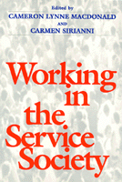

A comprehensive analysis of the experiences of workers in various service-sector occupations to explore how the shift to a service-based economy fundamentally transforms the nature of work and the challenges of workplace empowerment in contemporary America
A comprehensive analysis of the experiences of workers in various service-sector occupations to explore how the shift to a service-based economy fundamentally transforms the nature of work and the challenges of workplace empowerment in contemporary America
|  |
Working in the Service Society
edited by Cameron Lynne Macdonald and Carmen J. Sirianni
paper EAN: 978-1-56639-480-2 (ISBN: 1-56639-480-5)
$38.95, Aug 96, Available
cloth EAN: 978-1-56639-479-6 (ISBN: 1-56639-479-1)
$59.95, Sep 96, Out of Print
376 pp
6x9
1 table 1 figure
|
"[A] welcome addition to...the study of organizations and workers."
—Work and Occupations
Continued economic restructuring has brought service work to center stage in labor and management studies, as well as in the sociology of work, gender, race, and inequality. Because the idioms of service have become so central to our public interaction, the everyday struggles for recognition and respect in the service workplace have become integral to the very meaning of democratic citizenship in contemporary America.
This volume brings together some of the most important and engaging writing on service work. Based on rich ethnographic and case study material, the essays explore questions of power and control, resistance and empowerment, and innovation and organizing in the lives of front-line service workers. Cases are drawn from a broad range of occupations, including fast foods, clerical and paralegal work, domestic work and nannies, and direct sales, and from organizational settings, ranging from McDonald's to Harvard University to the suburban home.
The problems of organizing and new models of unionism are analyzed in the context of women's work culture, multiracial workplaces, contingent and part-time work, and participatory innovations to improve service and experience of work simultaneously.
Reviews
"This collection...bring[s] a light touch to consideration of a fundamental change in work in America."
—Choice
Contents
Preface
1. The Service Society and the Changing Experience of Work – Cameron Lynne Macdonald and Carmen Sirianni
Part I: Management Control of the New Labor Process
2. Rethinking Questions of Control: Lessons from McDonald's – Robin Leidner
3. The Politics of Service Production: Route Sales Work in the Potato-Chip Industry – Steven H. Lopez
4. Consumers' Reports: Management by Customers in a Changing Economy – Linda Fuller and Vicki Smith
5. Service with a Smile: Understanding the Consequences of Emotional Labor – Amy S. Wharton
Part II: Gender, Race, and Stratification in the Service Sector
6. From Servitude to Service Work: Historical Continuities in the Racial Division of Paid Reproductive Labor – Evelyn Nakano Glenn
7. Family, Gender, and Business in Direct Selling Organizations – Nicole Woolsey Biggart
8. Reproducing Gender Relations in Large Law Firms: The Role of Emotional Labor in Paralegal Work – Jennifer L. Pierce
Part III: Worker Resistance, Organizing, and Participation
9. Invisibility, Consciousness of the Other, and Resentment among Black Domestic Workers – Judith Rollins
10. Shadow Mothers: Nannies, Au Pairs, and Invisible Work – Cameron Lynne Macdonald
11. Resisting the Symbolism of Service among Waitresses – Greta Foff Paules
12. "The Customer Is Always Interesting": Unionized Harvard Clericals Renegotiate Work Relationships – Susan C. Eaton
13. The Prospects for Unionism in a Service Society – Dorothy Sue Cobble
Contributors
About the Author(s)
Cameron Lynne Macdonald teaches social studies at Harvard University.
Carmen Sirianni is Professor of Sociology at Brandeis University.
Subject Categories
Labor Studies and Work
Sociology
Women's Studies
In the series
Labor and Social Change, edited by Paula Rayman and Carmen Sirianni.
Labor and Social Change, edited by Paula Rayman and Carmen Sirianni, includes books on workplace issues like worker participation, quality of work life, shorter hours, technological change, and productivity, as well as union and community organizing and ethnographies of particular occupations.
© 2015 Temple University. All Rights Reserved. This page: http://www.temple.edu/tempress/titles/1217_reg.html.